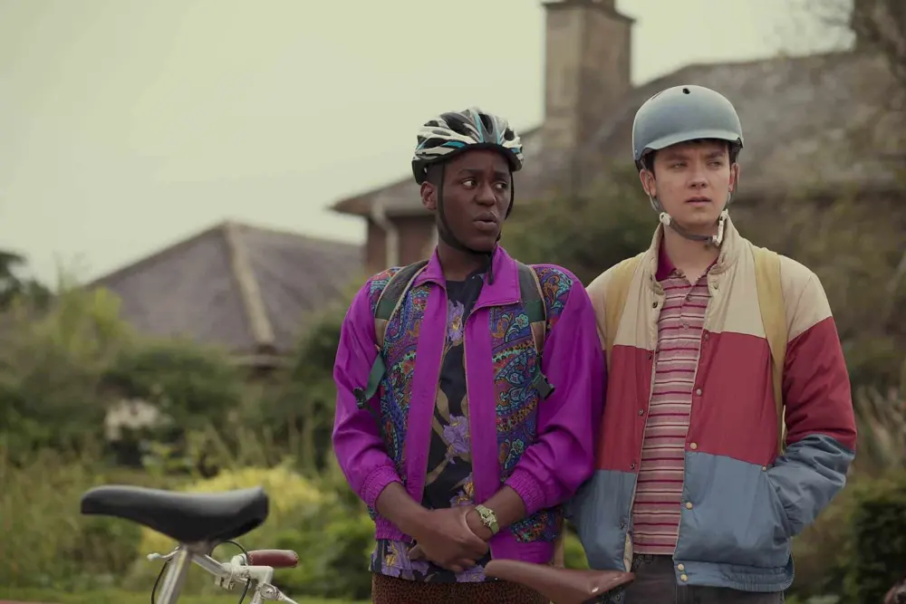
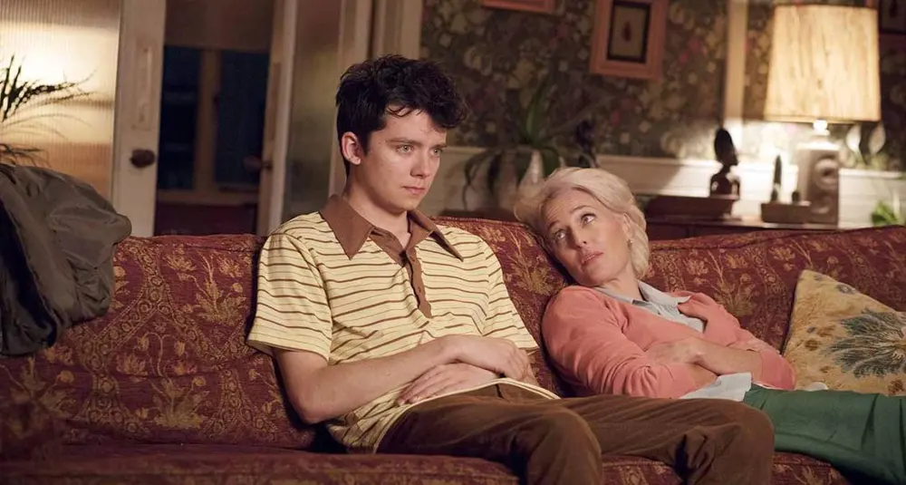

Sex Education: il mio breve parere sulla serie TV

Restando a casa, ancor più del solito, tra una cosa e l'altra mi sono "impegnata" nel guardare serie tv..sì, perché per me è un impegno dover guardare serie tv, nel senso che sono molto più propensa in un film, guardarlo tutto insieme e fine.
Infatti, anche se ho iniziato a guardare serie tv, cerco sempre quelle con poche stagioni. Almeno non mi annoio dopo un po'.
Vi voglio parlare di Sex Education. Una serie tv adolescenziale alla scoperta del sesso.

Ho notato che Netflix punta sempre a raccontare in modo forte i temi attuali.modificato Ad esempio l'omosessualità, il bullismo, l'abuso, il razzismo e soprattutto il sesso, come in questo caso.modificato
piccolo spoiler:
A dire il vero è anche molto surreale, ad esempio io ho riso tanto sul finale..lo spettacolo che hanno fatto con quest'elogio agli organi sessuali. È stato un pò audace!
Ma continuiamo a parlare della trama in sé, dunque il sesso viene mostrato senza censure e soprattutto, se ne parla tantissimo.
La cosa che mi ha colpito di questa serie è che, con ironia, tocca argomenti e problematiche che molti teenager si pongono al primo approccio con il sesso.
Ma anche facendo luce e, di conseguenza chiarendo molti punti, che per molti ragazzi e ragazze possono creare confusione.
Difatti, riesce comunque a lanciare un messaggio importante, dicendo che ognuno ha comunque i suoi tempi e che bisogna, in ogni caso, usare precauzioni.
Insomma, ho trovato tutte le puntate molto carine, scorrevoli e a tratti anche divertenti. Oddio, nulla di chissà cosa eh, la consiglio se si vuole vedere qualcosa di leggero e non troppo impegnativo. Proprio per un passatempo appunto.
Vi lascio qui la trama:
La trama di Sex Education si basa sulla vita di Otis Thompson, un ragazzo emarginato e vergine che vive con la madre, una terapista del sesso. Il ragazzo decide di aprire una clinica di terapia sul sesso per cercare di aiutare gli altri studenti con i mille dubbi che attraversano i ragazzi che si avvicinano per la prima volta all’argomento.
Otis è un esperto in materia perché sua Madre – Jean – è una sessuologa. Il ragazzo è sempre stato circondato da manuali, video e conversazioni aperte sul sesso.
